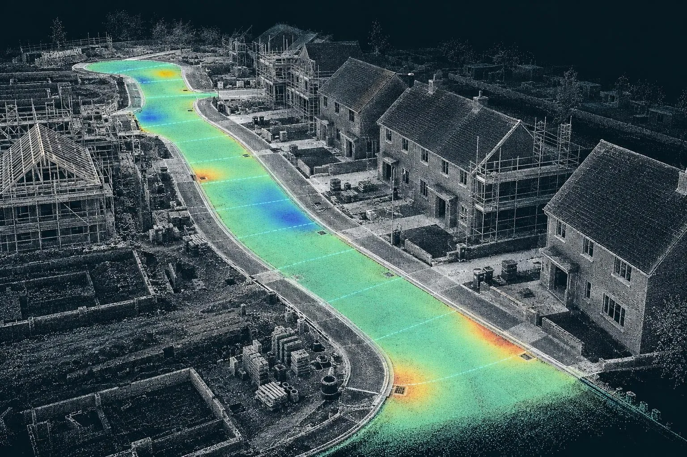

Road & sub-base scanning
Sub-base and binder checked against the road design before the next layer goes on.
3D laser scanning · Site QC
Dimensure scans roads, plots, buildings and gardens with a survey-grade laser scanner and tells you, in plain English, whether what's built matches the drawing. Millions of measured points, one clear pass or fail.

Services
Check the drawings before you dig, then scan what's built. Each comes with a fixed price before we book.
Sub-base and binder checked against the road design before the next layer goes on.
Before-and-after scans that map the thickness actually laid, across the whole road.
Slab flatness, brickwork to drawing and drain collar positions, checked plot by plot.
Millimetre-accurate scans of rooms and buildings for kitchens, extensions and interiors.
Groundworks drawings reviewed before you dig: levels, drainage and clashes found on paper.
Every level, wall, tree and step captured for landscape designers and builders.
What a scan looks like
A laser scanner records the surface around it as a dense cloud of 3D points, each with its own position to the millimetre. We line that cloud up with your design and colour it by how far each point sits from where it should be.
Mint is within tolerance. Amber and coral are high. Blue is low. You don't need survey software to read it, and you don't need to take our word for it: the point cloud is yours too.
Why scan
In short: a laser scan measures the whole surface instead of a few points, so problems show up while they are still cheap to fix, and you have a dated record if anyone questions the work later.
Traditional checks take a level reading every few metres. That works, but it relies on the high spot happening to be where the staff lands. A scan captures the entire sub-base, slab or room in minutes, then the comparison runs across every square metre.
On housing sites that means a road layer checked before it's buried, an oversite confirmed before the frame goes up, and a record of both for the adoption engineer, the warranty inspector or the client. For homeowners and designers it means a garden or room drawn from real measurements, so the kitchen fits and the steps come out the right height.
Dimensure was set up by a groundworks project manager with 12 years on UK housing sites, holding an NVQ Level 6 in Construction Contracting Operations Management, SMSTS and a CSCS Black (Manager) card. We know what a sub-base check is for, what holds up a gang, and what an inspector will ask.
The scanner and software do the heavy lifting on millions of points. Then our team goes through every report: checking the scans tie together, sense-checking the results against the drawings and the site, and flagging the problems that matter. If something looks wrong, we talk it through with you before you rely on it. More about us.

Illustration of a road scan coloured by deviation from design.
How it works
Road long sections, plot layouts, house types or a sketch. Tell us the tolerance you work to.
We confirm the price and book a visit around your programme, often within a few days.
We fit in with the gang and the programme, set up out of plant routes, and don't hold up the next trade.
Pass/fail against each check, heat-maps, marked-up drawing and the point cloud. Next working day for site QC.

Prices
Every service has its own cost guide explaining what drives the price and what a typical job costs. Plot checks start from £85 per plot when several plots are scanned on one visit, and a typical rear garden scan starts from £395.
Areas
Based in Corby, we cover everywhere within 50 miles as standard, which takes in most of the Midlands. Beyond that we work anywhere in the UK, with travel shown separately on the quote.
Dimensure carries out survey-grade 3D laser scanning and turns the scan into a plain-English check: is the sub-base at design level, how thick is the tarmac, is the slab flat, are the walls and drain collars where the drawing says, and what exactly is in this room or garden. You get a pass/fail report, colour heat-maps and the point cloud.
We are based in Corby and cover the whole of the Midlands as standard, with travel included within 50 miles. We also work anywhere in the UK, with travel charged separately.
We use a Trimble X9, which the manufacturer specifies at 2 mm range accuracy and 2.3 mm 3D point accuracy at 10 m. Every report states the registration error for that job, so you can see how well the scans tie together before you rely on a number.
For road and plot checks the report is normally with you the next working day, so the next layer or lift isn't held up. Measured building and garden surveys typically take three to five working days.
No. We check and record what has been built; your engineer still sets it out. Plot checks look at the slab, brickwork and drain collars against the drawing and against themselves, not the plot's position on the site grid.
Send the drawing, the location and when you need it. We reply the same working day with a fixed price.